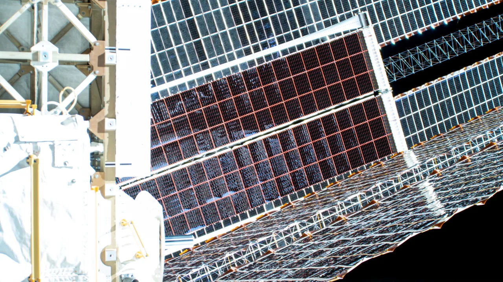

레드와이어를 볼 때 먼저 떠올리는 장면은 우주정거장, 태양전지판, 달 탐사 장비입니다. 그런데 2026년의 레드와이어 전망을 주식 관점에서 보면 우주 인프라만으로는 설명이 부족합니다. 회사는 이제 우주 장비 업체라기보다 우주와 방산 자율 시스템을 함께 파는 소형 항공우주·방산 기업에 가까워졌습니다.
2026년 1분기 실적은 양쪽 얼굴을 동시에 보여 줬습니다. 매출은 9,700만 달러로 전년 동기보다 57.9% 늘었고, 매출총이익률은 26.6%로 개선됐습니다. 수주잔고는 4억9,810만 달러까지 늘었고, 신규 수주가 매출을 얼마나 앞서는지 보는 북투빌 비율도 1.92배였습니다. 성장주가 듣고 싶어 하는 숫자는 꽤 많이 나왔습니다.
하지만 같은 분기에 순손실은 7,650만 달러로 커졌고, 조정 EBITDA도 920만 달러 적자였습니다. Edge Autonomy 인수와 관련된 주식보상 비용이 컸다는 설명은 있지만, 투자자가 확인해야 할 질문은 남습니다. 이 회사가 앞으로 “많이 수주하는 회사”에 머물지, 아니면 “수주를 이익과 현금으로 바꾸는 회사”가 될지입니다.
이 글은 투자 조언이 아닙니다. 레드와이어는 변동성이 큰 소형 성장주이고, 정부 계약·방산 예산·우주 프로젝트 일정·추가 주식 발행 가능성에 민감합니다. 따라서 전망은 목표가보다 사업이 증명해야 할 순서로 보는 편이 더 안전합니다.
수주잔고가 먼저 움직입니다

레드와이어 전망에서 가장 좋은 신호는 수주잔고입니다. 2026년 3월 말 기준 계약 수주잔고는 4억9,810만 달러였고, 이 가운데 우주 부문이 3억5,970만 달러, 방산 기술 부문이 1억3,840만 달러였습니다. 2026년 매출 전망이 4억5,000만~5억 달러라는 점을 감안하면, 이미 올해 매출 규모와 비슷한 수준의 잔고를 들고 있는 셈입니다.
북투빌 1.92배도 중요합니다. 단순히 과거 계약을 소진하는 것이 아니라, 한 분기 매출보다 더 많은 신규 계약이 들어왔다는 뜻입니다. 특히 회사가 언급한 18억 달러 규모의 Andromeda IDIQ, ELSA 태양전지판 첫 주문, 해병대 Stalker 관련 주문은 우주와 방산 양쪽에서 고객 접점이 넓어지고 있음을 보여 줍니다.
다만 수주잔고는 매출과 같지 않습니다. 정부 계약은 일정이 밀릴 수 있고, 일부는 단계별 예산 배정에 따라 실제 매출 인식 시점이 달라집니다. 고정가 계약에서는 원가 추정이 흔들리면 매출총이익률이 바로 흔들립니다. 레드와이어가 진짜 좋아지는지는 잔고가 늘었다는 발표보다, 잔고가 분기 매출과 현금 유입으로 얼마나 안정적으로 바뀌는지를 봐야 합니다.
그래서 첫 번째 관찰 지점은 2026년 매출 전망의 중간값이 아니라 분기별 매출 흐름입니다. 상반기 매출이 Edge Autonomy 효과로 크게 보이고 하반기에 힘이 빠지면 성장성 평가는 낮아질 수 있습니다. 반대로 방산 드론 주문과 우주 인프라 계약이 동시에 매출로 넘어오면 회사의 기본 체력이 달라집니다.
드론 인수는 회사를 바꿉니다
레드와이어가 Edge Autonomy를 인수한 뒤 회사의 성격은 꽤 달라졌습니다. 예전에는 우주 인프라, 전력 시스템, 미세중력 연구, 로봇팔 같은 장비가 중심이었다면 이제는 무인항공기, 광학 센서, 무선주파수 탑재체, 정보감시정찰 장비가 회사 설명의 앞쪽에 놓입니다. 우주에서 끝나는 회사가 아니라 지상·공중·궤도를 연결하는 방산 기술 회사가 되려는 흐름입니다.
이 변화는 성장 여지를 키웁니다. 전쟁과 안보 환경이 바뀌면서 소형 무인기, 장거리 감시, 전술 네트워크, 빠른 생산 능력의 중요성이 커졌습니다. 대형 방산 기업만으로는 모든 수요를 빠르게 채우기 어렵기 때문에, 특정 임무 장비를 가진 작은 기업이 계약을 따낼 공간도 생깁니다. 레드와이어가 말하는 멀티도메인 전략은 바로 이 빈틈을 노립니다.
문제는 인수 효과가 손익계산서에서 아직 깔끔하게 보이지 않는다는 점입니다. 2026년 1분기 매출 증가는 Edge Autonomy 인수 효과가 크게 기여했습니다. 동시에 판매관리비와 연구개발비도 크게 늘었습니다. 주식보상 비용처럼 일회성에 가까운 항목을 제외하더라도, 새 사업을 통합하고 영업망을 다시 짜는 비용은 한동안 남을 수 있습니다.
드론 사업은 기대가 큰 만큼 확인해야 할 것도 많습니다. 우크라이나 관련 수요, 미군과 동맹국 예산, 훈련용·정찰용 무인기 주문, 생산 병목, 전장 성능 평가가 모두 매출에 영향을 줍니다. 레드와이어가 단순히 “방산 드론 테마”로 평가받는 단계를 넘으려면 반복 주문, 정비·부품 매출, 신규 국가 고객이 함께 늘어야 합니다.
손실보다 현금흐름이 중요합니다
레드와이어의 가장 불편한 숫자는 순손실입니다. 2026년 1분기 순손실 7,650만 달러는 매출 성장만 보고 지나치기 어렵습니다. 회사는 이 손실에 Edge Autonomy 인수 관련 인센티브 유닛의 가속 베스팅 비용이 크게 들어갔다고 설명했습니다. 이 설명은 타당하지만, 투자자는 “일회성 비용을 빼면 괜찮다”에서 멈추면 안 됩니다.
조정 EBITDA가 920만 달러 적자였다는 점은 아직 본업의 수익 구조가 충분히 단단하지 않다는 신호입니다. 매출총이익률은 26.6%로 개선됐지만, 판매관리비와 연구개발비가 커지면 영업 레버리지가 바로 나타나지 않습니다. 우주 장비와 방산 제품은 기술 난도가 높고 고객 요구가 까다롭기 때문에, 매출이 커져도 프로그램 원가가 흔들릴 수 있습니다.
현금 여력은 나쁘지 않습니다. 2026년 3월 말 총 유동성은 1억7,520만 달러였고, 이 가운데 현금 및 현금성 자산은 1억4,450만 달러였습니다. 그러나 같은 회사가 2026년 5월에는 최대 3억5,000만 달러 규모의 ATM 주식 발행 프로그램도 새로 열었습니다. 이는 성장 자금 선택지를 넓히는 장치이지만, 기존 주주에게는 희석 가능성이라는 부담으로 읽힙니다.
따라서 레드와이어를 평가할 때는 순손실의 크기만 보는 것보다 현금흐름의 방향을 봐야 합니다. 매출이 늘면서 운전자본 부담이 줄고, 조정 EBITDA가 플러스로 돌아서며, 추가 발행 없이도 연구개발과 생산 확대를 감당할 수 있어야 합니다. 작은 우주·방산 성장주에서 주가를 오래 지탱하는 숫자는 매출 성장률보다 현금 소모 속도입니다.
주가가 기다리는 증거
레드와이어 주가가 한 단계 높게 평가받으려면 네 가지 증거가 필요합니다. 첫째, 2026년 매출 4억5,000만~5억 달러 전망을 무리 없이 달성해야 합니다. 둘째, 방산 기술 부문 매출이 인수 효과로 한 번 튄 숫자가 아니라 신규 주문과 반복 매출로 이어져야 합니다. 셋째, 우주 부문에서 원가 추정 손실이 줄어야 합니다. 넷째, 주식 발행 없이도 현금 여력이 버틸 수 있다는 신뢰가 필요합니다.
긍정적인 경로는 분명합니다. 수주잔고가 매출로 바뀌고, 방산 드론 주문이 빠르게 쌓이며, 우주 전력·로봇·미세중력 장비가 NASA와 상업 우주 고객에게 계속 팔리면 레드와이어는 희소한 우주·방산 복합 성장주가 됩니다. 이 경우 시장은 매출 배수만이 아니라 중장기 조정 EBITDA와 현금흐름 개선을 함께 반영할 수 있습니다.
반대로 부정적인 경로도 선명합니다. 정부 계약이 지연되고, Edge Autonomy 통합 비용이 길어지고, 우주 프로젝트에서 원가 재추정이 반복되며, 자금 조달을 위해 추가 주식 발행이 이어지면 성장 스토리는 희석됩니다. 작은 회사의 장점은 빠른 성장이고, 약점은 실수 한 번이 손익과 신뢰에 크게 반영된다는 점입니다.
그래서 레드와이어 전망은 “우주 산업이 커지니까 좋다”로 끝내기 어렵습니다. 이 회사의 2026년 핵심은 방산 드론 사업이 실제 이익 체력을 만들 수 있는지, 그리고 우주 인프라 계약이 안정적인 매출총이익률로 넘어오는지입니다. 지금은 기대가 숫자로 옮겨가는 초입입니다. 투자자가 볼 것은 꿈의 크기가 아니라, 그 꿈이 분기별 매출·마진·현금흐름으로 얼마나 빠르게 내려오는지입니다.
관련 영상
Redwire Enables Multi-Domain Operations
다음 실적에서 먼저 볼 숫자는 수주잔고, 방산 기술 매출, 매출총이익률, 조정 EBITDA, 영업현금흐름입니다. 이 다섯 가지가 같은 방향으로 좋아지면 레드와이어는 단순한 우주 테마주에서 실제 방산·우주 플랫폼 기업으로 인정받을 수 있습니다. 하나라도 계속 엇갈리면 주가는 좋은 뉴스에도 쉽게 흔들릴 가능성이 큽니다.